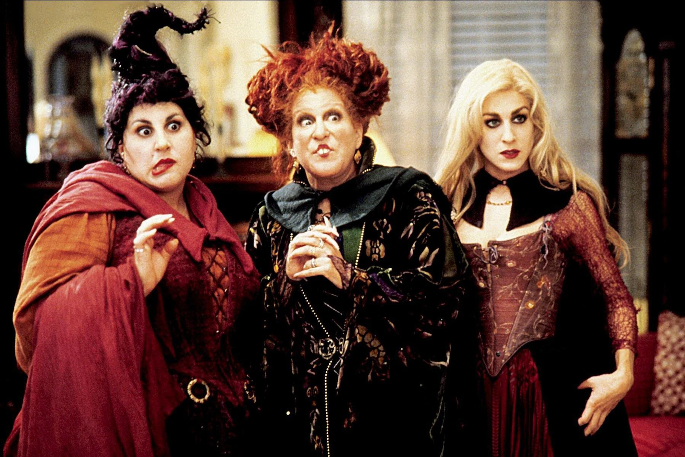
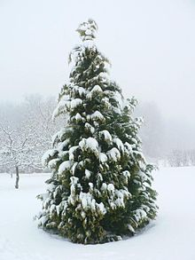
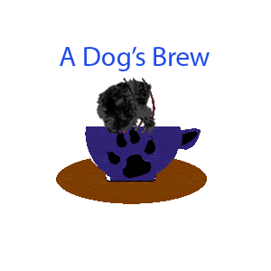
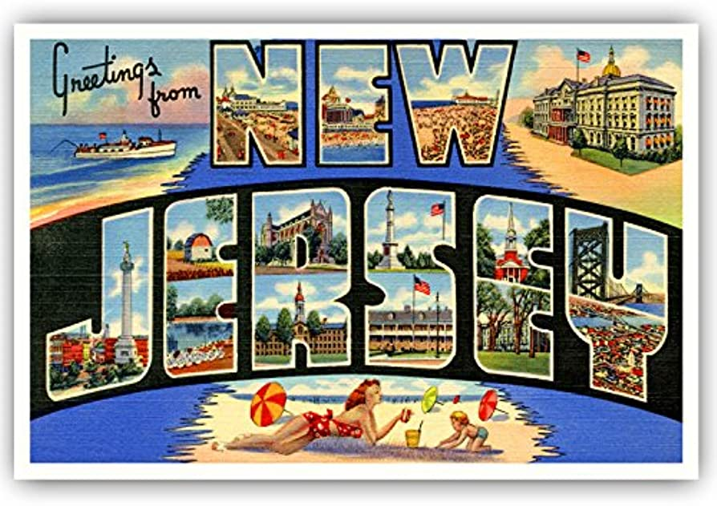
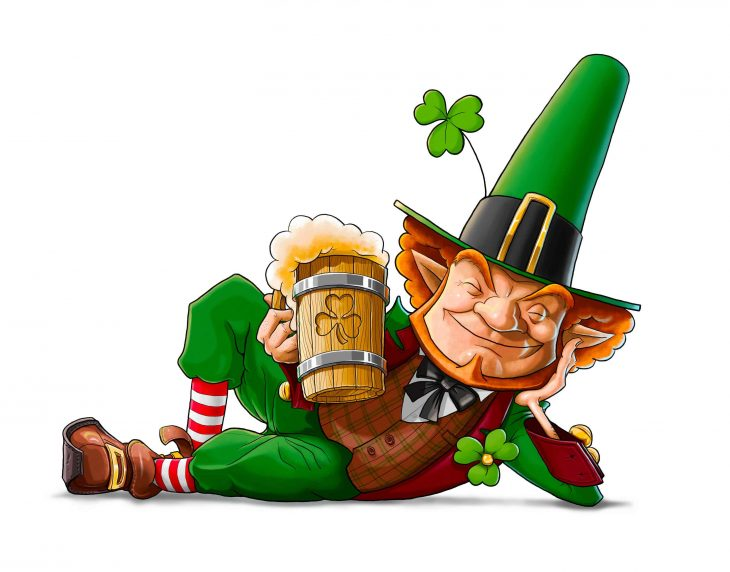

Projects
Across four long years, Kalen has made all different kinds of websites in the program. But 2022 was where his "carrer" really took off, and some of his best work was created! The streak continued in 2023, where he started to grasp the concept more than ever, and his newest masterpieces were created. Here, you can see some of his higher quality works across the years!
Type Key:
Major-Type: Main kind of website. These have the most attention and thought put into them. They are also the largest of all websites.
Animate-Type: Website made for animation. These usually only conatin simple animations, or made as tests for said animations.
Java-Type: Website created to experiment with JavaScript. These were a massive pain to work on, but they did look good in the end.
Extra-Type: Anything that does not truly fit either Major or Animate types. Usually something that had time put into it, but no further plans are known.

Story Of The Sanderson Sisters:
Created: October 6, 2022
Type: Major-Type
Description: Made for the spooky season of Halloween. This project was made in collaberation with Dominic, and as seen, it is one of the highest quality websites Kalen has made. This website is made as a tribute and explanation to the Sanderson Sisters of the hit movie, Hocus Pocus. and its sequal! It may not be Halloween, but give it a look anyway!
Fun Fact: Kalen selected these characters for the website because the second movie had released less than a week before the site started development! It was so new at the time, that there had to be a spoiler warning at the top of the page to warn readers to see Hocus Pocus 2 before seeing the website.

The Spooky Ghost
Created: October 22, 2022
Type: Animate-Type
Description: The first example of a sucessful animation from Tobin! This website is not much, but it was his first completed animation that he made, not only in html code, but in general. Shockingly, it didn't break apart halfway!
Fun Fact: Before starting this website, Kalen had created another website that involved an animations. This was called, "The Mysterious Spider" and it ended up as a MESS! This one was much cleaner, and easier to work with, and that leads to this.

Five Great Sea Creatures
Created: January 4, 2022
Type: Major-Type
Description: This project was one of the eairlest Kalen ever made. A TCA during Sophmore year, this website displays some of the most famous sea creatures and ranking them from top to bottem. This was the very first time that Kalen had used effects on images. Evey last picture has a shaking effect whenever you hover over them. Makes the site more alive, ya know?
Fun Fact: This may be classified as the first "major-style" project that Tobin has made. It was one of the first he made to properly utilize the navbar feature and had some of the first image animations.

Birthday Card
Created: September 12, 2022
Type: Animate-Type
Description: How about a fun little gift to celebrate your loved one's birthday? This small card was made during a lighting round of different projects, and is one of Kalen's personal favorites. This displays his truly first animated website!
Fun Fact: The two images used for the site had been ramdomly selected, since the project was made on a time crunch. Thus, the images had a white background that conflicted with the blue and red backgrounds of the card.

Snow And A Tree
Created: December 14, 2022
Type: Extra-Type
Description: Something special to look at for the holidays. This little site was made as a holiday special asisgnment in Mr Killgore's class. It was not anything special, but it did offer some extra practice to everyone involved!
Fun Fact: This was the last website that Kalen created in 2022! It was one of the many ways he capped of the year in such a fasion!

A Dog's Brew
Created: Febuary 14, 2022
Type: Major-Type
Description: Imagine, if you will, a restaurant that serves dogs, along with you! A kind of place where you can bring your dog to have a meal along side you. That's what this website represents! Based on a kind of restaurant that Ms Leonard had found on her travels, A Dog's Brew is made to recreate what the website of this particular restaurant would look like. It contains refrences to movies, links to KGT Studios, and a logo Kalen made in Photoshop. It was one of the first Major-Type websites Kalen ever made!
Fun Fact: The name of the made-up restaurant, A Dog's Brew, was based on the many movies with similar names. These include A Dog's Pourpose, A Dog's Journy, and A Dog's Way Home!

Postcard Generator
Created: March 21 2023
Type: Java-Type
Description: Ever wanted to get a postcard of one of the 50 states in the USA? Now you can! This nifty postcard generator was made to create quick postcards from Alabama to Wyoming! Building the JavaScript was easier than the rest the of projects, but it did take a bit pf a while to get this off the ground. This was a small side project in the grand scheme of things, but it still worked its job of being a nice test for JavaScript, and ended up being one of the more sucessful Java tests that Kalen created during the 2022-2023 school year.
Fun Fact: While creating the lesson for this site, Mr Killgore had to look up the names of all 50 states. He only knew 35 while creating the original site, having to look up 15 more just to complete the site!

A Website About Liam Vickers
Created: Febuary 14 2023
Type: Major-Type + Java-Type
Description: As you saw in the About Me page, Kalen is a massive fan of Murder Drones, and slowly learned about the series creator, Liam Vickers. And so, when given the oportunity to write about some kind of creator he knows about, Liam Vickers was selected. The website itself is an in-depth look at the backstory of Liam, while also covering his works, and artstyle. While the website was a joy to work on, the accordian function was an absolute nightmare! This only seemed reasonable since it was the first project to mainly use JavaScript. It took that one section two days to be fixed! But in the end, it still served as a nice tribute to the goofy edgelord!
Fun Fact: The website was not only made as a tribute to Liam, but it was also made to celebrate the release of Murder Drones Episode 3: The Promening(Febuary 17 2023)! It is what won the decision over Kalen's other choice, Don Bluth.

Lucky You Lottery
Created: March 17 2023
Type: Extra-Type
Description: In the spirit of St Patrick's Day, this website was made to promote a fictional loterry system based in Ireland. Kalen went through the extra effort of giving the titular lottery company a backstory, with a lucky Leprechaun named Patrick Leppy, and his want to give good luck to as many people as possible. It was a fun little project that included small refrences to Ireland and a few sponsering companys as well.
Fun Fact: The name, Patrick Leppy, was derived from two seperate sources. "Patrick" came from St Patrick himself. While "Leppy" was based on the name of a character made by Fusion Animations, for his small St Patty's Day video, The Little Leprechaun of Seattle.

Cookies Galore